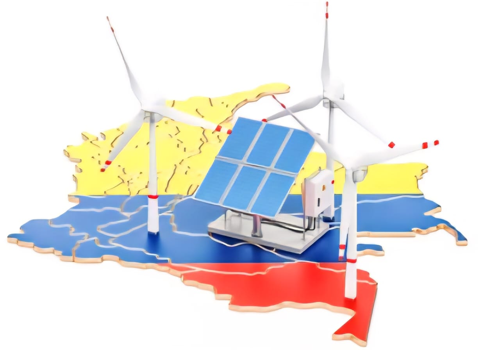

Transición Energética en Colombia
La transición energética en Colombia es el impulso acelerado hacia una matriz energética diversificada, donde las fuentes renovables, como la solar y la eólica, son protagonistas. Este proceso está respaldado por políticas públicas, como la Ley 2099 de 2021, que establece lineamientos para una transición energética justa y sostenible.
Importancia en Zonas Vulnerables
La implementación de energía solar en zonas vulnerables de Colombia es clave para cerrar brechas de acceso, mejorar la calidad de vida y fomentar la equidad energética. Muchas comunidades rurales aún sufren interrupciones frecuentes del servicio o altos costos por fuentes contaminantes como el diésel. Proyectos como Colombia Solar, anunciado en 2024, buscan llevar autogeneración solar a estratos 1, 2 y 3 mediante esquemas comunitarios financiados con recursos públicos, beneficiando a más de 200.000 hogares. Esta electrificación sostenible no solo reduce la pobreza energética, sino que también genera empleo, mejora el acceso a la educación y promueve la inclusión social mediante capacitación y apropiación tecnológica local.
La Loma, Cesar
La Loma es un corregimiento del municipio de El Paso, ubicado en el departamento del Cesar, al norte de Colombia. Esta zona, tradicionalmente minera y agrícola, ha sido seleccionada como escenario del proyecto Semilla Solar debido a su potencial energético y su transformación social reciente. En La Loma se inauguró el parque solar más grande del país, desarrollado por Enel Green Power Colombia, con más de 400.000 paneles solares distribuidos en 387 hectáreas, lo que representa un hito en la transición energética nacional (Enel, 2024). Este territorio, que por décadas dependió de la explotación de carbón térmico, ahora lidera un modelo de desarrollo sostenible basado en energías limpias.
La Loma se convierte así en un símbolo del cambio hacia un futuro verde, donde Semilla Solar encuentra un entorno idóneo para educar, inspirar y replicar acciones comunitarias de generación fotovoltaica.